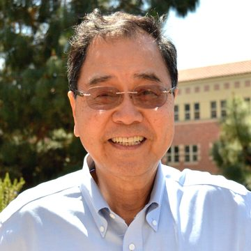
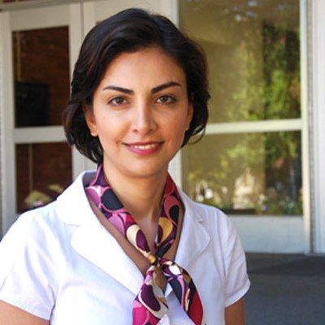

UCLA · Caltech · UCSD · Asia University · China Medical University
Faculty & Speakers
05 Contributors
The people who teach the sixty days.
Visiting faculty and speakers, grouped by the discipline they bring. Affiliations and research areas verified from the program's speaker roster.
Quantum Science & Engineering
